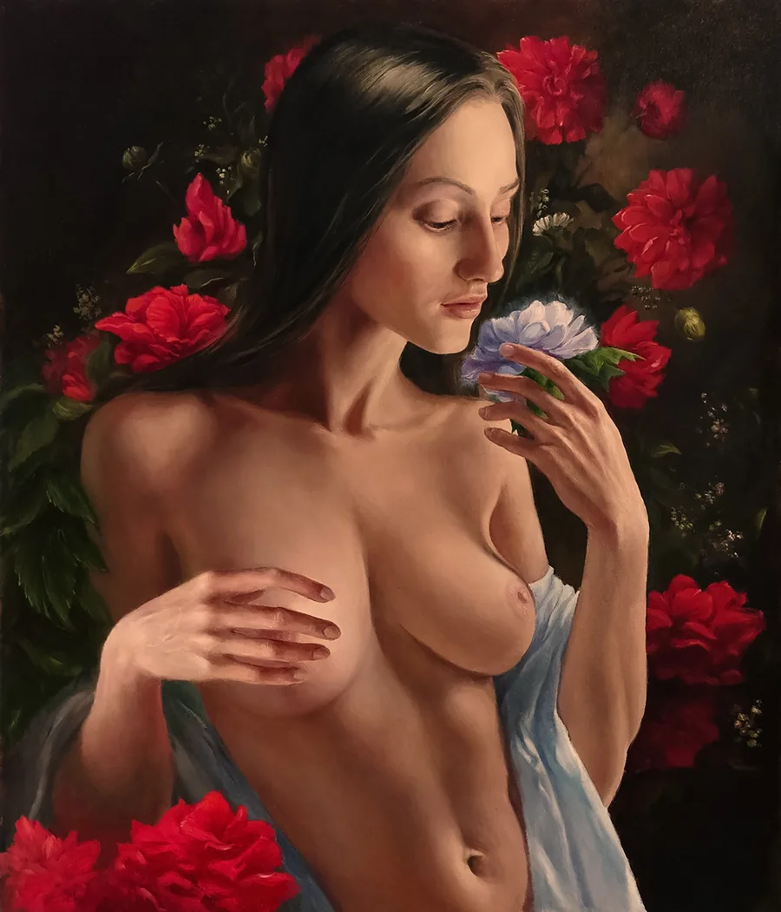
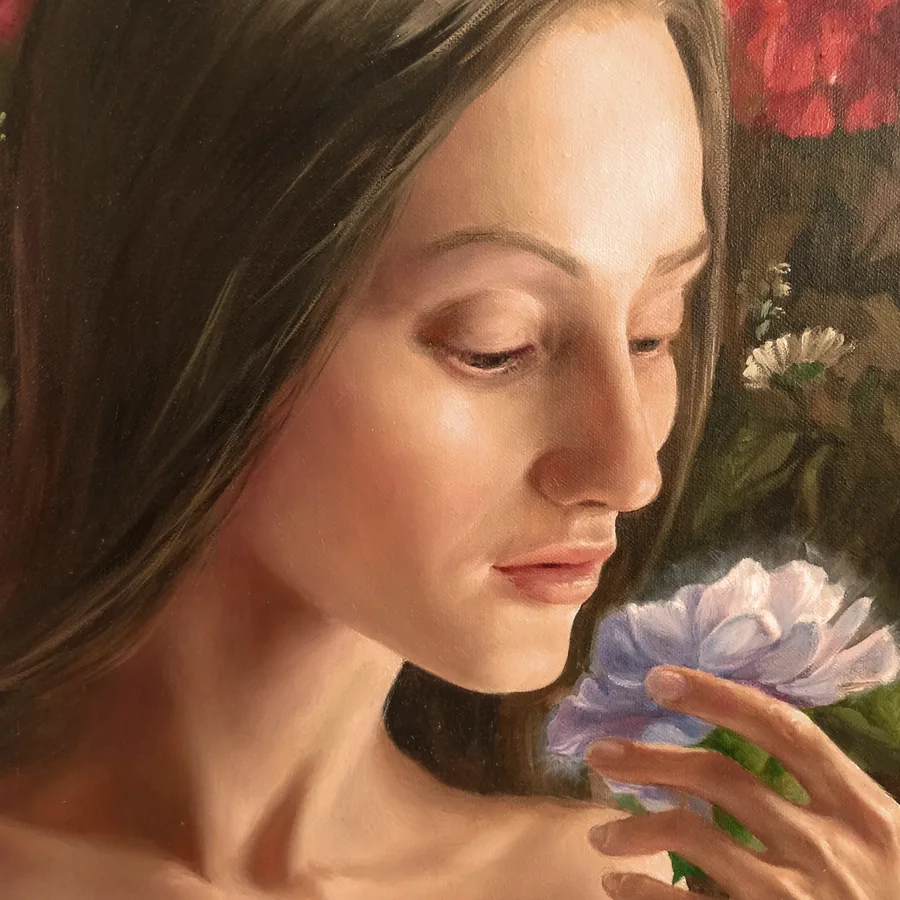
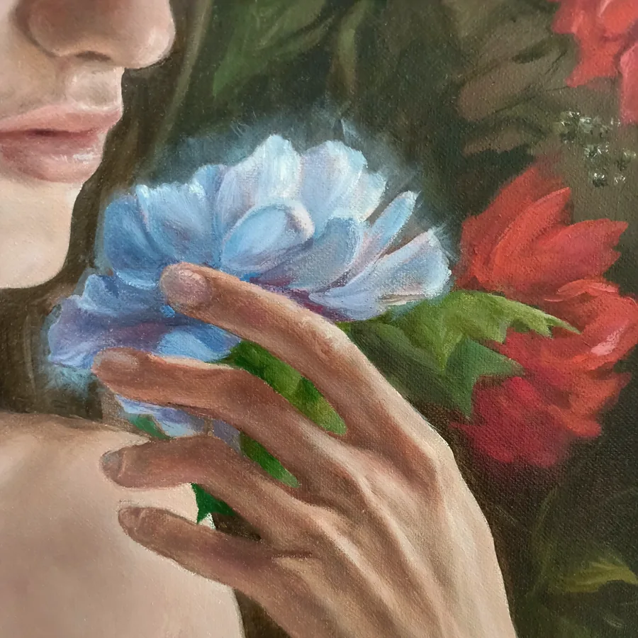
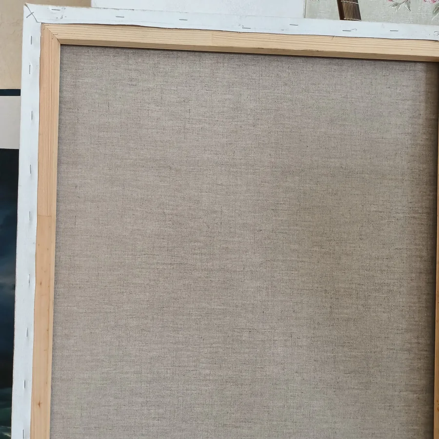

70 × 60 cm
Cleopatra
Available- Worldwide free delivery
- 7-day returns accepted
Mythology · 2023

60 × 70 cmOriginal artwork
Flora frames a dark-haired female figure among deep red roses, using flowers, gesture, and color to build a contemporary mythology portrait. The sitter turns slightly to the side and lifts a small purple bloom near her face, while the other hand rests close to the chest. Light blue fabric gathers around the lower form and arm, offering a cool counterpoint to the surrounding reds and dark greens. Soft directional light defines the face, shoulders, and hands before fading into the floral background. The centered vertical composition feels formal, but the varied placement of petals and leaves keeps it lively. Executed in oil on linen, the painting combines classical realism with a romantic, botanical atmosphere. Flora will appeal to collectors searching for an original flower portrait, goddess-inspired art, figurative oil painting, or richly colored fine art for an interior. Its 60 × 70 cm scale provides visual presence while preserving the detailed, intimate relationship between the figure and the flowers.
Acquisition price$1,800Available


